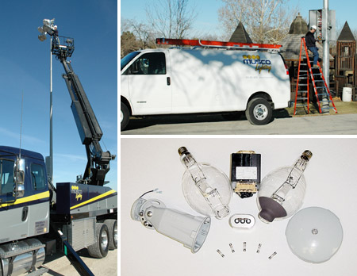

You are here: Home > Replacement Parts & Services


Replacement Parts & Services
Lighting Services
Musco offers the services of regionally-based, factory-trained technicianswho specialize in routine maintenance, repairs, and analysis of any sports-lighting system.
Genuine Musco Replacement Parts
Musco offers a full line of quality-tested replacement parts for any Musco product.
From poles to fuses to Musco's Z-Lamp™, we provide the parts you need to keep your system
running. Ordering parts from the original equipment manufacturer gives added assurance
of performance and compatibility.Contact Musco Parts & Services:
100 1st Avenue West
P.O. Box 808
Oskaloosa, Iowa 52577
Phone: 800.825.6020 or 641.673.0411
Fax: 641.673.6360
E-mail: service@musco.com
